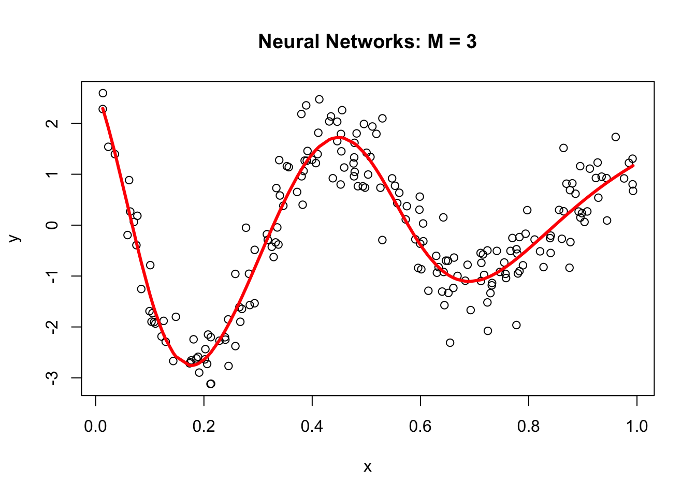

Chapter 25 Neural Networks
Artificial neural networks (ANNs) are a type of machine learning model that are inspired by the structure and function of the human brain. They consist of interconnected units called artificial neurons or nodes, which are organized into layers. The concept of artificial neural networks dates back to the 1940s, when Warren McCulloch and Walter Pitts (1943) proposed a model of the neuron as a simple threshold logic unit. In the 1950s and 1960s, researchers began developing more complex models of neurons and exploring the use of neural networks for tasks such as pattern recognition and machine translation. However, these early efforts were largely unsuccessful due to the limited computational power of the time.
It wasn’t until the 1980s and 1990s that significant progress was made in the development of artificial neural networks, thanks to advances in computer technology and the availability of larger and more diverse datasets. In 1986, Geoffrey Hinton and his team developed the backpropagation algorithm, which revolutionized the field by allowing neural networks to be trained more efficiently and accurately. Since then, artificial neural networks have been applied to a wide range of tasks, including image and speech recognition, natural language processing, and even playing games like chess and Go. They have also been used in a variety of fields, including finance, healthcare, and transportation. Today, artificial neural networks are an important tool in the field of machine learning, and continue to be an active area of research and development.
There have been many influential works accomplished in the field of artificial neural networks (ANNs) over the years. Here are a few examples of some of the most important and influential works in the history of ANNs:
- Perceptrons by Frank Rosenblatt (1958): This paper introduced the concept of the perceptron, which is a type of ANN that can be trained to recognize patterns in data. The perceptron became a foundational concept in the field of machine learning and was a key catalyst for the development of more advanced ANNs.
- Backpropagation by Rumelhart, Hinton, and Williams (1986): This paper introduced the backpropagation algorithm, which is a method for training ANNs that allows them to learn and adapt over time. The backpropagation algorithm is still widely used today and has been a key factor in the success of ANNs in many applications.
- LeNet-5 by Yann LeCun et al. (1998): This paper described the development of LeNet-5, an ANN designed for recognizing handwritten digits. LeNet-5 was one of the first successful applications of ANNs in the field of image recognition and set the stage for many subsequent advances in this area.
- Deep Learning by Yann LeCun, Yoshua Bengio, and Geoffrey Hinton (2015): This paper provided a comprehensive review of the field of deep learning, which is a type of ANN that uses many layers of interconnected neurons to process data. It has had a major impact on the development of deep learning and has helped to drive many of the recent advances in the field.
25.1 Neural Network - the idea
Both Support Vector Machines and Neural Networks employ some kind of data transformation that moves them into a higher dimensional space. What the kernel function does for the SVM, the hidden layers do for neural networks.
Let’s start with a predictive model with a single input (covariate). The simplest model could be a linear model:
\[ y \approx \alpha+\beta x \]
Since this model could be a quite restrictive, we can have a more flexible one by a polynomial regression:
\[ y \approx \alpha+\beta_1 x+\beta_2 x^2+\beta_3 x^3+\ldots = \alpha+\sum_{m=1}^M \beta_m x^m \]
The polynomial regression is based on fixed components, or bases: \(x, x^2, x^3, \ldots, x^M.\) The artificial neural net replaces these fixed components with adjustable ones or bases: \(f\left(\alpha_1+\delta_1 x\right)\), \(f\left(\alpha_2+\delta_2 x\right)\), \(\ldots, f\left(\alpha_M+\delta_M x\right).\) We can see the first simple ANN as nonlinear functions of linear combinations:
\[ y \approx \alpha+\beta_1 f\left(\alpha_1+\delta_1 x\right)+\beta_2 f\left(\alpha_2+\delta_2 x\right)+\beta_3 f\left(\alpha_3+\delta_3 x\right)+\ldots\\ = \alpha+\sum_{m=1}^M \beta_m f\left(\alpha_m+\delta_m x\right) \]
where \(f(.)\) is an activation function – a fixed nonlinear function. Common examples of activation functions are
- The logistic (or sigmoid) function: \(f(x)=\frac{1}{1+e^{-x}}\);
- The hyperbolic tangent function: \(f(x)=\tanh (x)=\frac{e^x-e^{-x}}{e^x+e^{-x}}\);
- The Rectified Linear Unit (ReLU): \(f(x)=\max (0, x)\);
The full list of activation functions can be found at Wikipedia.
Let us consider a realistic (simulated) sample:
n <- 200
set.seed(1)
x <- sort(runif(n))
y <- sin(12*(x + 0.2))/(x + 0.2) + rnorm(n)/2
df <- data.frame(y, x)
plot(x, y, main="Simulated data", col= "grey")
We can fit a polynomial regression with \(M = 3\):
ols <- lm(y ~ x + I(x^2) + I(x^3))
plot(x, y, main="Polynomial: M = 3", col= "grey")
lines(x, predict(ols), col="blue", lwd = 3)
Now, we can think of the line as weighted sum of fixed components: \(\alpha_1+\beta_1 x+\beta_2 x^2+\beta_3 x^3\).
# Parts
first <- ols$coefficients[2]*x
second <- ols$coefficients[3]*x^2
third <- ols$coefficients[4]*x^3
yhat <- ols$coefficients[1] + first + second + third
# Plots
par(mfrow=c(1,4), oma = c(0,0,2,0))
plot(x, first, ylab = "y", col = "pink", main = "x")
plot(x, second, ylab = "y", col = "orange", main = expression(x^2))
plot(x, third, ylab = "y", col = "green", main = expression(x^3))
plot(x, y, ylab="y", col = "grey",
main = expression(y == alpha + beta[1]*x + beta[2]*x^2 + beta[3]*x^3))
lines(x, yhat, col = "red", lwd = 3)
mtext("Fixed Components",
outer=TRUE, cex = 1.5, col="olivedrab")
The artificial neural net replaces the fixed components in the polynomial regression with adjustable ones, \(f\left(\alpha_1+\delta_1 x\right)\), \(f\left(\alpha_2+\delta_2 x\right)\), \(\ldots, f\left(\alpha_M+\delta_M x\right)\) that are more flexible. They are adjustable with tunable internal parameters. They can express several shapes, not just one (fixed) shape. Hence, adjustable components enable to capture complex models with fewer components (smaller M).
Let’s replace those fixed components \(x, x^2, x^3\) in our polynomial regression with \(f\left(\alpha_1+\delta_1 x\right)\), \(f\left(\alpha_2+\delta_2 x\right)\), \(f\left(\alpha_3+\delta_3 x\right).\)
library(neuralnet)
set.seed(2)
nn <- neuralnet(y ~ x, data = df, hidden = 3, threshold = 0.05)
yhat <- compute(nn, data.frame(x))$net.result
plot(x, y, main="Neural Networks: M = 3")
lines(x, yhat, col="red", lwd = 3)
Why did neural networks perform better than polynomial regression in the previous example? Again, adjustable components enable to capture complex models. Let’s delve little deeper. Here is the weight structure of
\[ y \approx \alpha+\sum_{m=1}^3 \beta_m f\left(\alpha_m+\delta_m x\right)\\ = \alpha+\beta_1 f\left(\alpha_1+\delta_1 x\right)+\beta_2 f\left(\alpha_2+\delta_2 x\right)+\beta_3 f\left(\alpha_3+\delta_3 x\right) \]
## [[1]]
## [[1]][[1]]
## [,1] [,2] [,3]
## [1,] 1.26253 6.59977 2.504890
## [2,] -18.95937 -12.24665 -5.700564
##
## [[1]][[2]]
## [,1]
## [1,] 2.407654
## [2,] 13.032092
## [3,] 19.923742
## [4,] -32.173264We used sigmoid (logistic) activation functions
\[ \text{Node 1:} ~~~f(x)=\frac{1}{1+e^{-x}}=\frac{1}{1+e^{-(1.26253-18.95937x)}}\\ \text{Node 2:} ~~~f(x)=\frac{1}{1+e^{-x}}=\frac{1}{1+e^{-(6.599773-12.24665x)}}\\ \text{Node 3:} ~~~f(x)=\frac{1}{1+e^{-x}}=\frac{1}{1+e^{-(2.504890-5.700564x)}} \]
We can calculate the value of each activation function by using our data, \(x\):
X <- cbind(1, x)
# to 1st Node
n1 <- nn$weights[[1]][[1]][,1]
f1 <- nn$act.fct(X%*%n1)
# to 2nd Node
n2 <- nn$weights[[1]][[1]][,2]
f2 <- nn$act.fct(X%*%n2)
# to 3rd Node
n3 <- nn$weights[[1]][[1]][,3]
f3 <- nn$act.fct(X%*%n3)
par(mfrow=c(1,3), oma = c(0,0,2,0))
plot(x, f1, col = "pink", main = expression(f(alpha[1] + beta[1]*x)))
plot(x, f2, col = "orange", main = expression(f(alpha[2] + beta[2]*x)))
plot(x, f3, col = "green", main = expression(f(alpha[3] + beta[3]*x)))
mtext("Flexible Components",
outer=TRUE, cex = 1.5, col="olivedrab")
Now we will go from these nodes to the “sink”:
\[ \frac{1}{1+e^{-(1.26253-18.95937x)}} \times 13.032092\\ \frac{1}{1+e^{-(6.599773-12.24665x)}}\times 19.923742\\ \frac{1}{1+e^{-(2.504890-5.700564x)}}\times -32.173264 \]
Finally, we will add these with a “bias”, the intercept:
\[ 2.407654 + \\ \frac{1}{1+e^{-(1.26253-18.95937x)}} \times 13.032092+\\ \frac{1}{1+e^{-(6.599773-12.24665x)}}\times 19.923742+\\ \frac{1}{1+e^{-(2.504890-5.700564x)}}\times -32.173264 \]
Here are the results:
# From Nodes to sink (Y)
f12 <- f1*nn$weights[[1]][[2]][2]
f22 <- f2*nn$weights[[1]][[2]][3]
f23 <- f3*nn$weights[[1]][[2]][4]
## Results
yhat <- nn$weights[[1]][[2]][1] + f12 + f22 + f23
plot(x, y, main="ANN: M = 3")
lines(x, yhat, col="red", lwd = 3)
25.2 Backpropagation
In 1986, Rumelhart et al. found a way to train neural networks with the backpropagation algorithm. Today, we would call it a Gradient Descent using reverse-mode autodiff. Backpropagation is an algorithm used to train neural networks by adjusting the weights and biases of the network to minimize the cost function. Suppose we have a simple neural network as follows:

The first layer is the source layer (with \(X\)). The second layer is called as hidden layer with three “neurons” each of which has an activation function (\(A\)). The last layer is the “sink” or output layer. First, let’s define a loss function, MSPE:
\[ \text{MSPE}=\frac{1}{n} \sum_{i=1}^n\left(y_i-\hat{y}\right)^2 \]
And we want to solve:
\[ \omega^{\star}=\operatorname{argmin}\left\{\frac{1}{n} \sum_{i=1}^n\left(y_i-\hat{y}\right)^2\right\} \]
To compute the gradient of the error with respect to a weight \(w\) or a bias \(b\), we use the chain rule:
\[ \frac{\partial \text{MSPE}}{\partial w} =\frac{\partial \text{MSPE}}{\partial \hat{y}}\frac{\partial \hat{y}}{\partial z}\frac{\partial z}{\partial w} \] Remember,
\[ \hat{y} = f(x)=\frac{1}{1+e^{-z}}=\frac{1}{1+e^{-(\alpha+wx)}}, \]
where \(w\) is the weight or bias in the network. By repeating this process for each weight and bias in the network, we can calculate the error gradient and use it to adjust the weights and biases in order to minimize the error of the neural network. This can be done by using gradient descent (See Appendix 1), which is an iterative method for optimizing a differentiable objective function, typically by minimizing it.
However, with a multilayer ANN, we use stochastic gradient descent (SGD), which is a faster method iteratively minimizing the loss function by taking small steps in the opposite direction of the gradient of the function at the current position. The gradient is calculated using a randomly selected subset of the data, rather than the entire data set, which is why it is called “stochastic.” One of the main advantages of SGD is that it can be implemented very efficiently and can handle large data sets very well. The gradient descent is explained in Chapter 38 in detail. We will use a plain gradient descent here to solve our ANN problem below as an example
REMOVED NEED TO COPY paste and work on that
25.3 Neural Network - More inputs
With a set of covariates \(X=\left(1, x_1, x_2, \ldots, x_k\right)\), we have
\[ y \approx \alpha+\sum_{m=1}^M \beta_m f\left(\alpha_m+\textbf{X} \delta_m\right)=\\ = \alpha+\beta_1 f\left(\alpha_1+\delta_{11} x_{1i}+\delta_{12} x_{2i} \dots +\delta_{1k} x_{ki}\right)+\dots\\ +\beta_M f\left(\alpha_{M1}+\delta_{M1} x_{1i}+\delta_{M2} x_{2i} \dots +\delta_{Mk} x_{ki}\right) \]
By adding nonlinear functions of linear combinations with \(M>1\), we have seen that we can capture nonlinearity. With multiple features, we can now capture interaction effects and, hence, obtain a more flexible model. This can be seen in blue and orange arrows in the following picture:

Let’s have an application using a Mincer equation and the data (SPS 1985 - cross-section data originating from the May 1985 Current Population Survey by the US Census Bureau) from the AER package.
Before we start, there are few important pre-processing steps to complete. First, ANN are inefficient when the data are not scaled. The reason is backpropagation. Since ANN use gradient descent, the different scales in features will cause different step sizes. Scaling the data before feeding it to the model enables the steps in gradient descent updated at the same rate for all the features. Second, indicator predictors should be included in the input matrix by dummy-coding. Finally, the formula for the model needs to be constructed to initialize the algorithm. Let’s see all of these pre-processing steps below:
library(AER)
data("CPS1985")
df <- CPS1985
# Scaling and Dummy coding
df[,sapply(df, is.numeric)] <- scale((df[, sapply(df, is.numeric)]))
ddf <- model.matrix(~.-1, data= df, contrasts.arg =
lapply(df[,sapply(df, is.factor)],
contrasts, contrasts = FALSE))
ddf <- as.data.frame(ddf)
# formula to pass on ANN and lm()
w.ind <- which(colnames(ddf)=="wage")
frmnn <- as.formula(paste("wage~", paste(colnames(ddf[-w.ind]), collapse='+')))
frmln <- as.formula(paste("wage~", "I(experience^2)", "+",
paste(colnames(ddf[-w.ind]), collapse = "+")))
# Bootstrapping loops instead of CV
mse.test <- matrix(0, 10, 5)
for(i in 1:10){
set.seed(i+1)
trainid <- unique(sample(nrow(ddf), nrow(ddf), replace = TRUE))
train <- ddf[trainid,]
test <- ddf[-trainid,]
# Models
fit.lm <- lm(frmln, data = train)
fit.nn <- neuralnet(frmnn, data = train, hidden = 1, threshold = 0.05,
linear.output = FALSE)
fit.nn2 <- neuralnet(frmnn, data = train, hidden = 2, threshold = 0.05)
fit.nn3 <- neuralnet(frmnn, data = train, hidden = 3, threshold = 0.05)
fit.nn4 <- neuralnet(frmnn, data = train, hidden = 3, threshold = 0.05,
act.fct = "tanh", linear.output = FALSE)
# Prediction errors
mse.test[i,1] <- mean((test$wage - predict(fit.lm, test))^2)
mse.test[i,2] <- mean((test$wage - predict(fit.nn, test))^2)
mse.test[i,3] <- mean((test$wage - predict(fit.nn2, test))^2)
mse.test[i,4] <- mean((test$wage - predict(fit.nn3, test))^2)
mse.test[i,5] <- mean((test$wage - predict(fit.nn4, test))^2)
}
colMeans(mse.test)## [1] 0.7296417 0.8919442 0.9038211 1.0403616 0.8926576This experiment alone shows that a linear Mincer equation (with I(expreince^2)) is a much better predictor than ANN. As the complexity of ANN rises with more neurons, the likelihood that ANN overfits goes up, which is the case in our experiment. In general, linear regression may be a good choice for simple, low-dimensional datasets with a strong linear relationship between the variables, while ANNs may be better suited for more complex, high-dimensional datasets with nonlinear relationships between variables.
Overfitting can be a concern when using ANNs for prediction tasks. Overfitting occurs when a model is overly complex and has too many parameters relative to the size of the training data, which results in fitting the noise in the training data rather than the underlying pattern. As a result, the model may perform well on the training data but poorly on new, unseen data. One way to mitigate overfitting in ANNs is to use techniques such as regularization, which imposes constraints on the model to prevent it from becoming too complex. Another approach is to use techniques such as early stopping, which involves interrupting the training process when the model starts to overfit the training data.